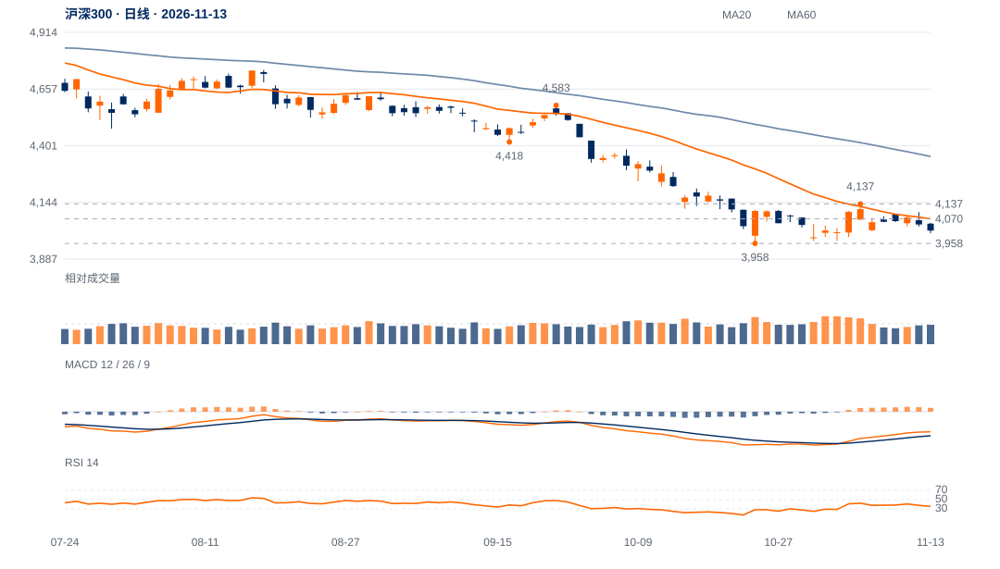

旧突破已经结算
11月5日收4113.41曾越过4110中峰，次日回落；原4137两日过滤从未完成。本周最高4100.05，未能重新进入中峰上方。
4110上破后的保持失败是主证据；当前价格再度靠近4000—3958。前低未破，仍允许技术反应，但直接延续新升势的依据不足。

查看大图 ↗先收回4070，再按4110—4137原中峰及时间过滤检验保持。
3958原结构底线实际失守后，重新评估下方结构。
11月5日收4113.41曾越过4110中峰，次日回落；原4137两日过滤从未完成。本周最高4100.05，未能重新进入中峰上方。
10月30日以来尾段10日净升0.77%，日均量较前跌波高约14%；反弹耗时与量能并未换来相应价格空间。
13日收4016.29，低于20日线4069.52；完整周RSI约26.9、周MACD柱仍负。近端与周线共同限制修复，但尚未出现3958失守。
4000附近已有历史交易区，3958低点仍在；周线弱势及低RSI可能伴随反抽，不能将接近支撑等于已经下破。